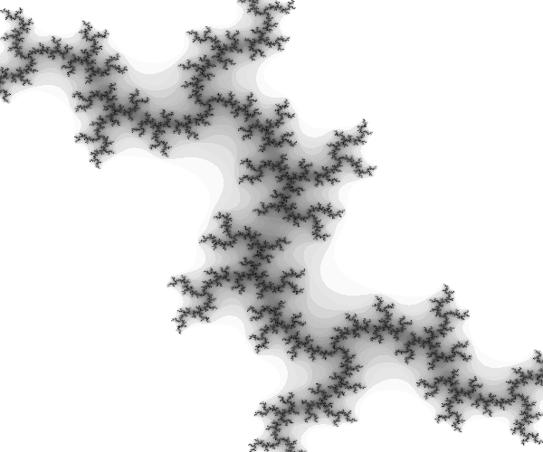

Mulțimea Julia a fost descoperită cu mult timp înainte de mulțimea Mandelbrot de matematicianul francez Gaston Julia în 1918. Pornind de la aceeași formulă care a fost folosită pentru construcția setului Mandelbrot:
se pot construi o infinitate de mulțimi Julia. Pentru construcția unei astfel de mulțimi, se alege o constantă C fixă și se modifică valoarea de început a iterațiilor (z0) care în cazul setului Mandelbrot era de fiecare dată 0. Dacă iterațiile converg, atunci z0 este parte din mulțimea Julia corespunzătoare constantei C alese. Dacă iterațiile diverg, atunci punctul z0 nu face parte din mulțimea Julia.
Relația dintre mulțimile Mandelbrot și Julia este astfel clară: mulțimea Mandelbrot este un index al tuturor mulțimilor Julia posibile. Formele pe care le pot lua mulțimile Julia sunt foarte diferite dar ele pot fi împărțite în două grupuri: mulțimi Julia conectare și mulțimi Julia neconectate. Mulțimile Julia neconectate au o infinitate de puncte de convergență risipite în plan înconjurate de zone de divergență mai rapidă sau mai lentă. Acestea se numesc și mulțimi Julia de tip “praf”.
|  | |
| Multime Julia deconectată | Multime Julia conectată |
Relația dintre mulțimea Mandelbrot și mulțimile Julia corespunzătoare diferitelor puncte ale mulțimii Mandelbrot este schițată în figura următoare. Cu cât punctul ales ca origine pentru mulțimea Julia este mai aproape de limita de convergență a mulțimii Mandelbrot cu atât mulțimea Julia rezultată este mai haotică, mai deconectată. În apropiere de marginile mulțimii Mandelbrot, aceasta are comportament haotic, o variație foarte mică a lui C poate conduce la o mulțime Julia complet diferită.
| Aspectul mulțimilor Julia în funcție de poziția constantei C în planul complex al mulțimii Mandelbrot (adaptat din http://paulbourke.net/fractals/juliaset/). |